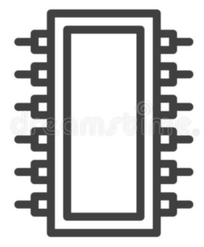

First steps in bare-metal programming using UEFI – part 6

This series of articles describes how to start writing bare-metal programs for modern PCs, using Linux as the development platform. By “bare metal” I mean without any operating system: the application will be run directly by the computer’s EFI firmware, at boot time.
This article is about using EFI’s Graphics Output Protocol to draw graphical content on the screen. It’s surprisingly simple – by EFI standards – but only because the facilities EFI offers are so rudimentary. Essentially, EFI just provides access to the lowest-common-denominator features of a graphics adapter.
As in the previous articles, I’m assuming you’re developing on a
64-bit Linux system, using the gnu-efi library to provide
low-level services.
Basic principles
EFI’s Graphics Output Protocol (GOP) provides, essentially, three things:
- Access to a framebuffer
- A way to set and query video modes
- A block transfer service which may have some hardware acceleration (but often does not).
If you’re used to working with a framebuffer, you’ll find EFI graphics very familiar. In particular, almost everything I wrote in my article on programming for the Linux framebuffer applies equally well to EFI. A framebuffer is just an area of memory on which an application can write, to set pixels’ colour and intensity.
Locating the GOP service
Like everything else in EFI, the GOP is identified by a GUID.
gnu-efi pre-defines a variable
gEfiGraphicsOutputProtocolGuid that has the appropriate
GUID already in place. So the code to get the GOP is simple:
EFI_STATUS efi_main (EFI_HANDLE image_handle, EFI_SYSTEM_TABLE *systab)
{
//...
EFI_GRAPHICS_OUTPUT_PROTOCOL* gop;
EFI_STATUS status = uefi_call_wrapper (BS->OpenProtocol, 6,
ST->ConsoleOutHandle, &gEfiGraphicsOutputProtocolGuid,
(void **)&gop, image_handle,
NULL, EFI_OPEN_PROTOCOL_BY_HANDLE_PROTOCOL);
//...In principle, this operation can fail, but I’m unsure how an
application would proceed usefully if it does. You could use
Print() to log a message to the console, I guess.
Framebuffer address and characteristics
Having located the GOP service, we can use it to get the address of the framebuffer, and its resolution and other properties.
void *framebuffer = (void *)gop->Mode->FrameBufferBase; // Address
int cx = gop->Mode->Info->HorizontalResolution; // Width
int cy = gop->Mode->Info->VerticalResolution; // Height
int stride = gop->Mode->Info->PixelsPerScanLine;
EFI_GRAPHICS_PIXEL_FORMAT pf = gop->Mode->Info->PixelFormat;The concept of “stride” (which goes by other names, including “scale”) might not be a familiar one.
In general, you can’t assume that each row of pixels directly follows the previous row in the framebuffer’s memory. It’s safe to assume that the first byte in framebuffer memory corresponds to some property of the pixel in the top, left corner of the display, and that the following bytes correspond to the rest of that top row of pixels.
However, there may be a gap in memory between the end of the first
row, and the start of the second, and likewise for subsequent rows. That
is, PixelsPerScanLine could be larger than
HorizontalResolution. So to move from one row of pixels to
the next, you need to add to the framebuffer address an amount that
depends on PixelsPerScanLine, and not on
HorizontalResolution. There’s an implication here that
there might be video memory in the framebuffer that is
invisible.
Developers who are familiar with the Linux framebuffer won’t find any of this odd, I imagine; but it’s not intuitive. The situation exists, I think, because the same video memory is used to handle different display resolutions (more on this later).
So we know where the framebuffer is in memory, how many rows of
pixels it has, and how many pixels there are in a row (including,
perhaps, some invisible ones). But how are the pixels themselves
organized? This is where PixelFormat comes in.
In principle, different video adapters might organize the memory
within each pixel differently. In fact, on the same machine the layout
might be different in different video modes. In practice, though, all
the machines I’ve worked on have a 32-bit “BGRX” layout to each pixel.
The value of PixelFormat is “1” here; gnu-efi
defines the constant PixelBlueGreenRedReserved8BitPerColor
for this value. With this format, each pixel takes four bytes of memory.
The first byte stores the blue intensity, the second green, and the
third red. The fourth byte doesn’t seem to have any particular function
(it’s not usually an alpha channel, for example). It doesn’t seem to
matter, in my tests, what this value is set to, if anything.
This pixel format is the same in most Linux framebuffer implementations, because it’s just the way most video adapters are organized internally.
NOTE
I made the same claim in my Linux framebuffer article, and almost immediately people started e-mailing me to point out that their own video adapters were different. If you want to ensure broad compatibility, you ought to check the pixel format, and adapt your application accordingly. In theory, the UEFI spec allows for any distribution of colour channel data within the bytes that make up a pixel.
Writing the framebuffer
It’s very simple to output to the display: just write the appropriate pixel value into the framebuffer’s memory. For example, with the 4 byte-per-pixel layout that most video adapters use, you can set the top, left pixel to white like this:
int32_t *framebuffer = (int32_t *)gop->Mode->FrameBufferBase;
*framebuffer = 0xFFFFFFFF;It’s easy enough to hack up a function or macro that packs the red, green, and blue values into a 32-bit integer.
If we’ve cast the framebuffer pointer to an int32_t *,
then the address of the start of each row of pixels is just
framebuffer + row * stride. Again, for broad compatibility,
you ought to work these addresses out from the specific pixel format,
rather than just assuming BGRX.
Video modes
A video adapter will almost always support different video modes,
that is, different combinations of resolution, bits-per-pixel, and
refresh rate. For better or worse, I don’t think the EFI API provides a
way to find the refresh rate, so you can’t do much with it. However, you
can set and query the video mode using gop->SetMode()
and gop->QueryMode() respectively. If your application
has a preference for resolution or colour depth, it can query the
available modes using code like this, and pick the best match:
for (uint32_t i = 0; i < gop->Mode->MaxMode; i++)
{
UINTN mode_info_len;
EFI_GRAPHICS_OUTPUT_MODE_INFORMATION* mode_info;
uefi_call_wrapper (gop->QueryMode, 4,
gop, i, &mode_info_len, &mode_info);
// Check the contents of `mode_info` to see which mode suits us best
}Block transfer accelerator
The Graphics Output Protocol includes a block transfer or “bitblt” service, which an application can use to move data from memory to the screen, or from one part of the screen to another. This service might be accelerated by hardware in the video adapter. In my experience it doesn’t make graphics operations much faster, and my guess is that the block transfer operations are just being done by the CPU in the EFI firmware. It’s plausible that some video adapters will do better in this respect that others. Still, because the block transfer service doesn’t seem to outperform regular CPU operations in my tests, I haven’t used it much, so I don’t have a lot to say about it.
Notes
You can use text output (e.g., Print()) and graphics at
the same time, but bear in mind that one will overwrite the other.
Changing the text console mode (rows, columns) will probably change the
graphics resolution. They are, after all, using the same
framebuffer.
It should be obvious, but it’s worth keeping in mind the application developer has to do all the real work of drawing shapes and text. Even drawing a straight line can be challenging, if you need it to be anti-aliased properly. There are many libraries for drawing graphics and text, but you probably won’t be able to use them in an EFI application, unless you build them from source with EFI-friendly settings. Expect a good deal of hard work, even for comparatively simple graphics.
Because working with a framebuffer in EFI is so similar to working with a framebuffer in Linux, you should be able to do a fair amount of testing on a regular Linux platform, before transferring the application to EFI. Working on Linux has the advantage that you can use Linux debugging and profiling tools, none of which will work with an EFI application.
Although working with graphics in EFI is straightforward, producing sound is not. There probably isn’t much scope for EFI video gaming, even if you can overcome the lack of hardware acceleration.
Closing remarks
An exercise for the reader is to write a photo slide-show application
for EFI, that boots from a USB flash drive. It should display a series
of JPEG images from the same flash drive. These articles have covered
handling files and working with a framebuffer, so the only additional
necessary step is to decompress the JPEG data into the framebuffer. A
conventional JPEG library like libjpeg probably won’t work,
because it uses too many functions from the standard C library. However,
I’ve had good results using JPEG libraries intended for embedded
systems, like picojpeg, because they
generally have no external dependencies.
Have you posted something in response to this page?
Feel free to send a webmention
to notify me, giving the URL of the blog or page that refers to
this one.